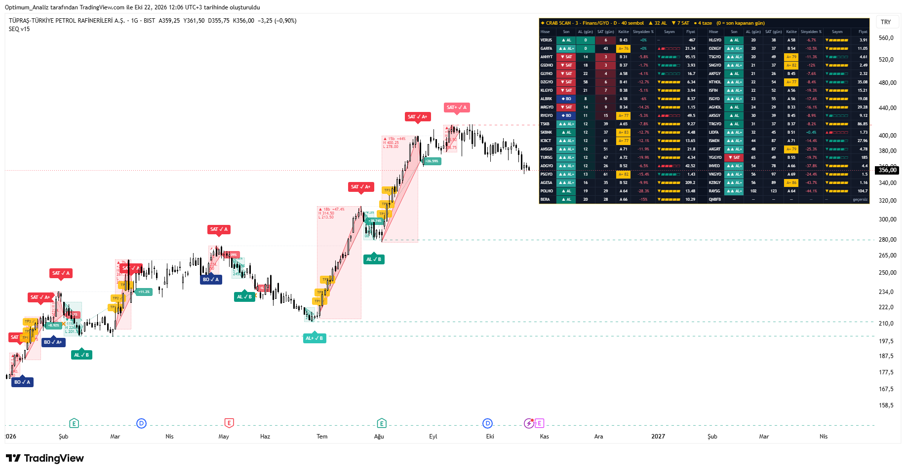
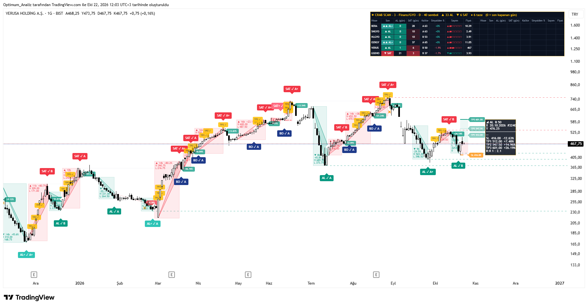
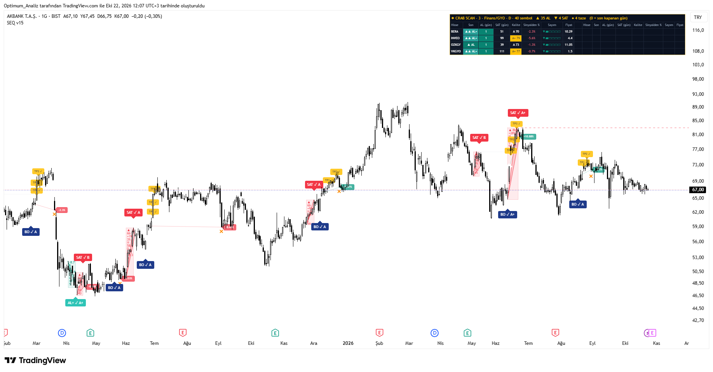

Finansal piyasalarda güven arayanlar için tasarlandı. Klasik ardışık sayım araçlarının en büyük zayıflığını (aynı yönde sürekli sinyal ve whipsaw) kapatan, tamamen kapanış bazlı çalışan, yapısal geometri ve çoklu hisse taraması içeren kapsamlı bir yapı.

Sistem, kapanış fiyatının seçilen periyot önceki kapanışa göre ardışık aşağı veya yukarı hareketini sayar. Minimum eşiğe ulaşıldığında potansiyel tükeniş oluşur. Ancak sinyalin çıkması Sıralı Kilit mekanizmasına bağlıdır.
Sayım periyodu (lookback) tamamen ayarlanabilir. 1 yapıldığında gecikme sıfıra iner — sinyal, eşik tamamlandığı barın kapanışında anında oluşur. Daha yüksek değerler (örneğin 2 veya 3) daha süzülmüş, daha az gürültülü sonuç verir. Kullanıcı ihtiyacına göre sıfır gecikme veya daha konservatif çalışma seçebilir.
Klasik sequential indikatörler eşiğe her ulaştığında sinyal üretir. Bu, aynı yönde art arda işlem açılmasına ve gereksiz whipsaw’a yol açar. Sıralı kilit bunu yapısal olarak engeller.

Her sinyal aşağıdaki bileşenlerle puanlanır ve A+ / A / B olarak notlandırılır:
A+ ≥ 75 · A ≥ 55 · B < 55
Aynı yön ek sinyalleri (AL+/SAT+) için ayrı minimum skor eşiği tanımlanabilir. Böylece sadece yüksek kaliteli ek girişlere izin verilir.
Sadece sayı değil, yapı da görünür hale getirilir. Tüm katmanlar ayrı ayrı açılıp kapatılabilir.
Dip veya tepe serisinin en yüksek ve en düşük noktaları ile sinyal noktası arasında kapalı polyline üçgen çizilir.
Serinin başlangıç-bitiş aralığı, yüzde değişim ve High/Low değerleri kutu içinde gösterilir.

Açık işlem takibi, stop ve hedef yönetimi içerir. Tüm kontroller kapanış bazlıdır.
Kapanan işlem sayısı, win oranı, ortalama getiri, toplam getiri, açık pozisyon yüzdesi, sinyal zinciri ve anlık sayım durumu dashboard’da gösterilir.
Pine Script istek limiti nedeniyle gruplar halinde çalışır. Her kopyada bir grup aktif edilir. Tarama zaman dilimi ayrıca seçilebilir. Listeler tamamen özelleştirilebilir.
5 ayrı grup (Lider, Sanayi/Enerji, Finans/GYO, Teknoloji/Sağlık, Perakende/Gıda vb.). Her grupta 40’a kadar hisse. Aktif grup seçilerek çalışır. Tüm grupları görmek için script birden fazla kez eklenebilir.
AL · AL+ · BO · SAT · SAT+
Alarm kurarken mutlaka “Bar kapanışında bir kez” seçeneği kullanılmalıdır. Böylece repaint riski tamamen ortadan kalkar.
Ağır grafik yükünden kaçınmak veya sadece tarama yapmak isteyenler için ayrı mod mevcuttur.
Güven arayanlar için tasarlandı.
Sinyal yalnızca kapanışta gelir — repaint yoktur.
Aynı yönde sürekli işlem açılmaz (Sıralı Kilit).
Sayım periyodu 1 yapılarak sıfır gecikme elde edilebilir.
Geometri, kalite skoru ve yapısal stop ile filtre uygulanır.
5 grup halinde 40’ar hisse taranabilir.